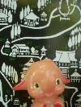
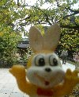
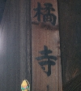

|
collection
|
不定期更新ぷちとりっぷ日記。  -サトチャンリョコウキ1-鞍馬・貴船編（2008）- -ピョンチャンリョコウキ2-京都北野天満宮・天神さん編（2008）- -カバクンリョコウキ3-秋の奈良へトリップ！編（2008）--カバクンリョコウキ3-秋の奈良へトリップ！編その2（2008）-Copyright(c) 2008 なないろまーぶる All rights reserved. |